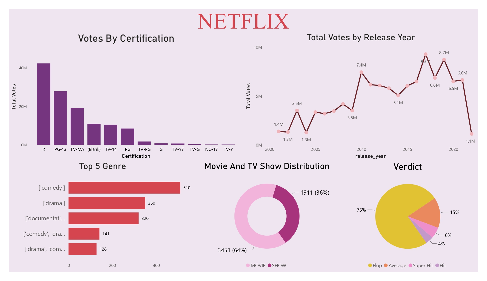
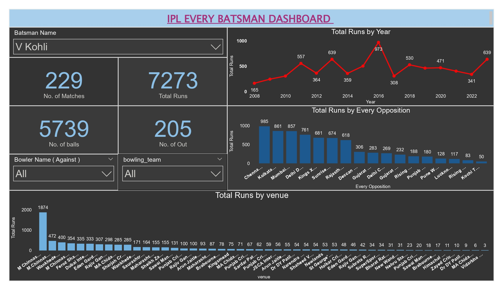

Data Visualization Projects
Project No. 1 -: Nrega Analysis
The NREGA (National Rural Employment Guarantee Act) Analysis Dashboard provides a comprehensive overview of various metrics related to the employment and budgetary expenditures under the NREGA scheme across different states in India. This dashboard provides critical insights into the functioning of the NREGA scheme, including worker demographics, financial allocations, and the effectiveness of the program across different regions.

It helps in identifying trends, such as which states have the highest expenditure or the most active workers, and highlights the distribution of workdays among various categories of workers.

If you want to analyze data for all the states and other metrics, please download the PBIX file:
Download PBIXIf you want to download this sample, use the PDF file:
Download PDFProject No. 2 -: Netflix Dashboard
This Netflix Dashboard is an interactive dashboard that provides insights into key metrics like popular genres, top-rated content, user demographics, and viewing patterns. It helps analyze user preferences and content performance, enabling informed decisions to optimize content strategy and enhance the Netflix experience.
If you want to analyze data for all other metrics, please download the PBIX file:
Download PBIXIf you want to download this sample, use the PDF file:
Download PDFProject No. 3 -: IPL Dashboard
The IPL Dashboard is a detailed visualization tool covering the period from 2008 to 2023, offering comprehensive insights into every batsman's performance against every bowler at every venue in the Indian Premier League (IPL). Users can explore matchups, analyze player statistics, and track performance trends across different stadiums over the years. Whether you're examining a batsman's success rate against a particular bowler or comparing performances at various venues, this dashboard provides a deep dive into 15 years of IPL data, making it an invaluable resource for fans, analysts, and strategists.
If you want to analyze data for all other metrics, please download the PBIX file:
Download PBIXIf you want to download this sample, use the PDF file:
Download PDF